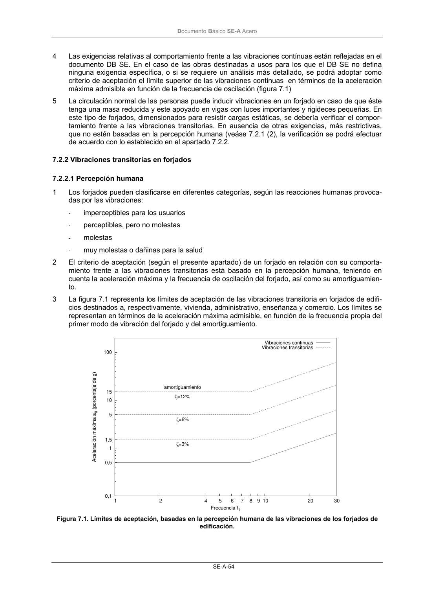

DB-SE-A · 7.2.2 Vibraciones transitorias en forjados · 7.2.2.1 Percepción humana · versión 2007-10-23
SHA256: 9ed9ea694aabfbda3bfbbef40dfe9223fde05d13c35bc2ba9751e5a96a22a64f · página física 56 de 168 · métodos de encabezado
solo si están cotejados.
Formatos: Markdown · JSON de bloques · PDF p. 56 · imagen PNG
Documento Básico SE-A Acero SE-A-54 4 Las exigencias relativas al comportamiento frente a las vibraciones contínuas están reflejadas en el documento DB SE. En el caso de las obras destinadas a usos para los que el DB SE no defina ninguna exigencia específica, o si se requiere un análisis más detallado, se podrá adoptar como criterio de aceptación el límite superior de las vibraciones continuas en términos de la aceleración máxima admisible en función de la frecuencia de oscilación (figura 7.1) 5 La circulación normal de las personas puede inducir vibraciones en un forjado en caso de que éste tenga una masa reducida y este apoyado en vigas con luces importantes y rigideces pequeñas. En este tipo de forjados, dimensionados para resistir cargas estáticas, se debería verificar el compor- tamiento frente a las vibraciones transitorias. En ausencia de otras exigencias, más restrictivas, que no estén basadas en la percepción humana (veáse 7.2.1 (2), la verificación se podrá efectuar de acuerdo con lo establecido en el apartado 7.2.2. 7.2.2 Vibraciones transitorias en forjados 7.2.2.1 Percepción humana 1 Los forjados pueden clasificarse en diferentes categorías, según las reacciones humanas provoca- das por las vibraciones: - imperceptibles para los usuarios - perceptibles, pero no molestas - molestas - muy molestas o dañinas para la salud 2 El criterio de aceptación (según el presente apartado) de un forjado en relación con su comporta- miento frente a las vibraciones transitorias está basado en la percepción humana, teniendo en cuenta la aceleración máxima y la frecuencia de oscilación del forjado, así como su amortiguamien- to. 3 La figura 7.1 representa los límites de aceptación de las vibraciones transitoria en forjados de edifi- cios destinados a, respectivamente, vivienda, administrativo, enseñanza y comercio. Los límites se representan en términos de la aceleración máxima admisible, en función de la frecuencia propia del primer modo de vibración del forjado y del amortiguamiento. 100 15 10 5 1,5 1 0,5 0,1 30 20 10 9 8 7 6 5 4 2 1 Aceleración máxima a0 (porcentaje de g) Frecuencia f1 ζ=3% ζ=6% ζ=12% amortiguamiento Vibraciones continuas Vibraciones transitorias Figura 7.1. Límites de aceptación, basadas en la percepción humana de las vibraciones de los forjados de edificación.
